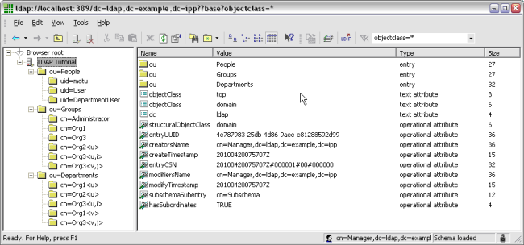

With the help of SPI synchronization, you have the option to perform the following actions against arbitrary external repositories, which otherwise would have to be performed against audit trail databases:
You need to perform the following steps to make SPI synchronizing possible:
You can download the following zip file containing sources required for this tutorial:
You find all data needed for this tutorial, like user and department information and grants, in LDIF (LDAP Data Interchange Format) format in the user-directory.ldif file, residing in the examples/ldap-sync/etc folder of this zip file. Please note that user groups are not covered with this example.
ou=People contains user information like user name (uid), password (userPassword), name and last name (givenName and sn), etc.
# People dn: ou=People,dc=ldap,dc=example,dc=ipp objectClass: top objectClass: organizationalUnit ou: People
ou=Departments contains information about the department (ou) and the according description.
# Departments dn: ou=Departments,dc=ldap,dc=example,dc=ipp objectClass: top objectClass: organizationalUnit ou: Departments
ou=Groups represents the grants by assigning an organization, a role or department to a user (uniqueMember). Roles and organizations (cn) are defined in the model, whereby departments are defined in the LDAP folder under ou=Departments.
# Groups dn: ou=Groups,dc=ldap,dc=example,dc=ipp objectClass: top objectClass: organizationalUnit ou: Groups
To configure the LDAP, perform the following steps:
ucdata-path ./ucdata include ./schema/core.schema include ./schema/cosine.schema include ./schema/inetorgperson.schema pidfile ./run/slapd.pid argsfile ./run/slapd.args database bdb suffix "dc=ldap,dc=example,dc=ipp" rootdn "cn=Manager,dc=ldap,dc=example,dc=ipp" rootpw secret directory ./data index objectClass eq
%OPEN_LDAP_DIR%/ldapadd -f %CARNOT_HOME%/examples/ldap-sync/etc/user-directory.ldif -D "cn=Manager,dc=ldap,dc=example,dc=ipp" -x -w secret
To set up the LDAP browser, perform the following steps:

Figure: Data displayed in the LDAP Browser
It is necessary to supplement the following abstract classes and interfaces to provide the implementations needed to access the desired external repository:
Please refer to the chapter Integrating External User Repositories for detailed information on these classes and interfaces.
Additionally, the following abstract classes have to be supplemented with the necessary implementation, so that they are able to get the information on user, user group and department retrieved from the external repository:
You find a sample SPI implementation in the Examples section of your Stardust installation. Download the following file containing the example implementation:
In this example, the class LDAPAdapter plays a major role as it converts the Java requests into LDAP requests (please see the following section). Hereby it is using the class LDAPConnection, which encapsulates the connection to an LDAP directory structure.
In the following section, we provide a quick look into the necessary implementations:
LDAPLoginProvider implements ExternalLoginProviderThis class performs a login via LDAPAdapter with the given user-password couple. It determines, if a login is allowed, thus performs an authentication against the LDAP directory structure.
LDAPSynchronizationProvider extends DynamicParticipantSynchronizationProviderThis class performs the synchronization of user and department information via delegation to the LDAP-adapter. It also provides the retrieved information as object of the class UserConfig and DepartmentConfig respectively.
AlwaysSyncStrategy extends DynamicParticipantSynchronizationStrategyIn case this implementation is asked in the engine, if a synchronization is necessary, e.g. during loading a user from the database, it always returns true. Thus it makes sure a synchronization takes always place in this example. This only serves for demonstration purpose, in a productive environment, more complex solutions are implemented.
UserConfig extends ExternalUserConfigurationThis class encapsulates entries like name, description, email and other properties, which are user relevant during sychronization. Additionally, grants, which this users owns and are needed for the authorization (method getModelParticipantsGrants()), are provided via delegation of the request to the LDAPAdapter.
DepartmentConfig extends ExternalDepartmentConfigurationThis class encapsulates the fields name and description, which are relevant for a department during synchronization.
To keep the search in the LDAP directory flexible, the search mechanism is implemented via filter, which is demonstrated in the following user filter:
(Property LDAPSynchronization.UserFilter)(&(uid=%v)(objectclass=inetorgperson)) ...
&(uid=motu)(objectclass=inetorgperson)Hereby, the character & describes the logical conjunction operator. The two following conditions in the brackets have to be fulfilled.
%OPEN_LDAP_HOME%/ldapsearch -b "ou=People,dc=ldap,dc=example,dc=ipp" "(&(uid=motu)(objectclass=inetorgperson))"
Additionally to the configurable filters, there are numerous further properties, which can be configured with the help of the carnot.properties file, e.g. the attribute names of the several LDAP entries or the LDAP entry, which is determined to be searched for users (see class LDAPProperties).
The following properties have to be added to your carnot.properties file:
Security.Authentication.LoginService = org.eclipse.stardust.examples.authorization.ldap.LDAPLoginProvider Security.Authorization.SynchronizationProvider = org.eclipse.stardust.examples.authorization.ldap.LDAPSynchronizationProvider Security.Authorization.SynchronizationStrategy = org.eclipse.stardust.examples.authorization.ldap.AlwaysSyncStrategy Security.Authentication.Mode = external Security.Authorization.Mode = principal LDAPSynchronization.ServerName = localhost LDAPSynchronization.ServerPort = 389 LDAPSynchronization.BindMode = dedicated LDAPSynchronization.BindUserDN = cn=Manager,dc=ldap,dc=example,dc=ipp LDAPSynchronization.BindPassword = secret LDAPSynchronization.RootDN = dc=ldap,dc=example,dc=ipp LDAPSynchronization.UserBaseDN = ou=People LDAPSynchronization.DepartmentBaseDN = ou=Departments LDAPSynchronization.GroupBaseDN = ou=Groups LDAPSynchronization.UserFilter = (&(uid=%v)(objectclass=inetorgperson)) LDAPSynchronization.DepartmentFilter = (&(cn=%v)(objectClass=organizationalRole)) LDAPSynchronization.ParticipantFilter = (&(uniqueMember=uid=%v,ou=People,dc=ldap,dc=example,dc=ipp)(objectClass=groupOfUniqueNames))